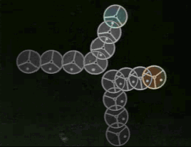

Filter za duh pušča sled izginjajočih slik svetlega, premikajočega se objekta ma temnem ozadju. Ta učinek vidimo le pri predvajanju videa ali korakanju po njem. Diagram "živega" gibanja je lahko zelo primeren pri učenju pojmov, kot so položaj, hitrost in pospešek.


Hitrost izginjanja duhov nastavljamo s pomočjo drsnika ali z vnosom vrednosti direktno v polje. The Clear button clears all current ghosts from the image.